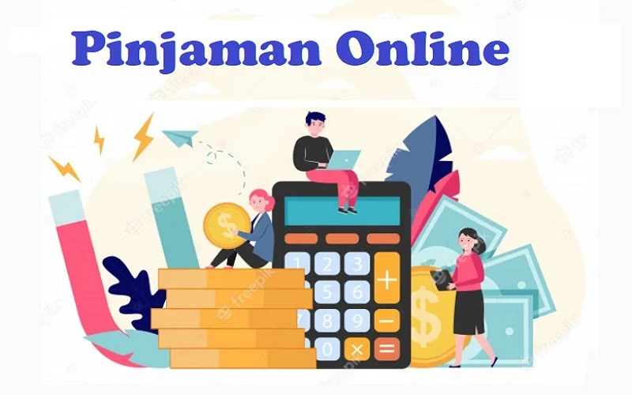

Pengunjung membaca di ruang koleksi di Perpustakaan Jakarta, Jakarta, Jumat (20/10/2023). ANTARA/Nadia Putri Rahmani
Mataram (ANTARA) - "Jangan sampai karena kelihatannya murah dan mudah, mahasiswa lalu tergiur untuk melakukan pinjaman online (pinjol)," demikian penegasan Wakil Rektor III Bidang Kemahasiswaan dan Alumni Universitas Mataram (Unram), Nusa Tenggara Barat, Dr Sujita ST MT. Di hadapan ratusan mahasiswa yang menghadiri 'Mandiri Goes to Campus' di Ruang Senat Unram, Senin (23/10), ia mengingatkan mahasiswa agar tidak terjerat pinjol, khususnya pinjol ilegal. Oleh karena itu, mahasiswa perlu mengenali lebih dalam tentang pinjol. Sosialisasi tentang layanan ini sangat diperlukan mengingat serbuan promosi melalui jejaring digital tentang produk tersebut cukup masif. Mahasiswa diimbau juga dapat memahami cara pengelolaan keuangan yang baik khususnya dengan memanfaatkan digitalisasi di bidang perbankan saat ini. Digitalisasi perbankan dapat membantu mahasiswa dalam merencanakan keuangan ke masa depan. Hal itu sejalan dengan program yang dibawa lembaga-lembaga perbankan, seperti Bank Mandiri yang mengenalkan aplikasi mobile 'Livin by Mandiri'. Sejalan dengan hal itu, kegiatan di Kampus Unram yang mengusung tema 'Masa Depan Cerah dengan Investasi Terarah' tersebut merupakan komitmen perbankan untuk memberikan pelatihan sekaligus pengetahuan keuangan bagi mahasiswa. Aplikasi mobile 'Livin by Mandiri' misalnya, dapat dimanfaatkan mahasiswa sebagai media belajar investasi dengan nominal kecil. Investasi bukan dengan uang sisa, tapi menyisihkan nominal uang dari awal untuk diinvestasikan.
Antisipasi pinjol ilegal
Kementerian Komunikasi dan Informatika (Kemenkominfo) telah menyiapkan tiga langkah khusus sebagai cara dari melindungi masyarakat Indonesia dari jeratan pinjaman online (pinjol) ilegal. Pertama, memperkuat literasi digital khususnya mengenai keamanan digital, sehingga memperkuat literasi keuangan masyarakat. Kemenkominfo bekerja sama dengan banyak pihak, seperti Kemendikbudristek, Diskominfo di provinsi atau kabupaten/kota, untuk gencar memberikan literasi keuangan demi melindungi masyarakat. Program literasi digital menjadi program rutin tahunan dari Kemenkominfo dengan menggandeng Gerakan Nasional Literasi Digital (GNLD) guna meningkatkan pemahaman masyarakat Indonesia terhadap empat pilar literasi digital, yaitu kecakapan digital, keamanan digital, budaya digital, dan etika digital. Dengan peningkatan literasi digital khususnya di pilar keamanan digital maka masyarakat bisa lebih hati-hati saat akan mengakses sebuah layanan, termasuk dalam hal ini mengenal layanan yang memiliki izin maupun yang ilegal. Literasi digital maupun literasi keuangan harus terus ditingkatkan sehingga dipahami dan masyarakat tidak lagi terjebak praktik-praktik layanan digital yang ilegal termasuk pinjol ilegal. Langkah selanjutnya, Kemenkominfo rutin menghadirkan kanal fact-checking yang membantu masyarakat lebih cepat mendapat kejelasan mengenai informasi pinjaman online ilegal. Contohnya, untuk mengecek sebuah rekening terafiliasi dengan praktik ilegal seperti judi online, pinjol ilegal, atau pun penipuan masyarakat bisa melakukan pengecekan fakta lewat situs web cekrekening.id. Masyarakat bahkan bisa melaporkan rekening terkait apabila ternyata mengalami penipuan atau terjerat praktik pinjol ilegal lewat situs web cekrekening.id. Tercatat selama Agustus-September 2023 Kemenkominfo mendapatkan aduan dari masyarakat terkait rekening terafiliasi pinjaman online ilegal sebanyak 688 laporan. Terakhir, langkah untuk melindungi masyarakat dari pinjol ilegal ialah dengan merilis "Stempel Hoaks" atau dikenal juga dengan istilah hoax debunking. Apabila ternyata ditemukan sebuah informasi yang beredar tidak memenuhi fakta, maka informasi tersebut akan diberikan label "Misinformasi" sehingga masyarakat tidak akan terjebak dan menjadi salah langkah dalam mengambil keputusan. Dengan sistem yang memastikan sebuah informasi benar atau tidak, maka masyarakat bisa lebih aman dalam mencari rujukan informasi di ruang digital termasuk terkait dengan pinjaman online dan bisa memilih layanan yang berizin. Kemenkominfo juga secara rutin berkoordinasi dengan kementerian dan lembaga terkait dalam hal ini Otoritas Jasa Keuangan serta Bank Indonesia agar dapat memberantas praktik pinjaman online ilegal serta dapat meningkatkan kesadaran masyarakat terkait literasi keuangan..
Pengaduan pinjol
Jajaran Pengawas Perilaku Pelaku Usaha Jasa Keuangan, Edukasi, dan Perlindungan Konsumen Otoritas Jasa Keuangan (OJK) telah menerima sekitar 10 ribu pengaduan terkait sektor jasa keuangan sejak 1 Januari sampai 30 Juni 2023. Pengaduan tersebut termasuk dalam 144,15 ribu permintaan layanan pada OJK, yang juga terdiri dari 36 pengaduan berindikasi pelanggaran dan 933 permintaan penyelesaian sengketa yang masuk ke Lembaga Alternatif Penyelesaian Sengketa (LAPS) Sektor Jasa Keuangan. Dari pengaduan tersebut, sebanyak 4.663 pengaduan terkait dengan sektor perbankan, 2.402 pengaduan financial technology, 1.957 pengaduan industri perusahaan pembiayaan, 869 pengaduan industri asuransi, dan sisanya merupakan pengaduan terkait pasar modal. Terkait dengan pengaduan yang masuk melalui Aplikasi Portal Pelindungan Konsumen (APPK), OJK terus mendorong penyelesaian pengaduan, baik pengaduan yang berindikasi sengketa maupun pengaduan yang terkait pelanggaran aturan. Terkait hal tersebut, terdapat 7.962 pengaduan atau 79,06 persen dari total pengaduan yang terselesaikan penanganannya melalui proses Internal Dispute Resolution oleh pelaku usaha jasa keuangan, dan sebanyak 2.109 pengaduan (20,94 persen) sedang dalam proses penyelesaian. Sementara itu, di sisi pemberantasan pinjaman online ilegal dan investasi ilegal, OJK bersama seluruh anggota Satgas Waspada Investasi (SWI) dari 12 kementerian dan lembaga terus meningkatkan koordinasi dalam penanganan investasi dan pinjaman online ilegal, sehingga jumlah pengaduan bulanan terkait investasi dan pinjaman online ilegal telah berada dalam tren yang menurun. Terdapat 1.222 pengaduan pada Januari 2023 dan jumlahnya terus turun dengan 275 pengaduan pada Juni 2023 dengan penurunan terbesar yaitu untuk pengaduan atas pinjaman online ilegal. Untuk menangani isu pelindungan konsumen sektor jasa keuangan dan mendorong pemerataan literasi dan inklusi keuangan, OJK juga mendorong program literasi dan inklusi keuangan secara masif secara tatap muka maupun daring melalui Learning Management System (LMS) dan media sosial. Per 30 Juni 2023, OJK telah melaksanakan 1.010 kegiatan edukasi keuangan yang menjangkau 284.680 orang peserta secara nasional. Di sisi lain, OJK terus mendorong peran Tim Percepatan Akses Keuangan Daerah (TPAKD) sebagai forum koordinasi akselerasi perluasan akses keuangan regional untuk menunjang pemerataan literasi dan inklusi keuangan nasional. Sampai dengan 30 Juni 2023 telah terbentuk 494 TPAKD di 34 provinsi dan 460 kabupaten/kota di Indonesia, yang mencapai 89,49 persen dari seluruh kabupaten dan kota di Indonesia. Sementara itu, OJK juga telah merilis daftar 101 pinjol legal atau berizin di Indonesia. Total jumlah penyelenggara fintech peer-to-peer lending atau fintech lending yang berizin di OJK hingga Oktober 2023 ada 101 perusahaan. OJK mengimbau masyarakat menggunakan jasa penyelenggara fintech lending yang sudah berizin dari OJK agar terhindar dari segala tindak penipuan. Editor: Slamet Hadi Purnomo